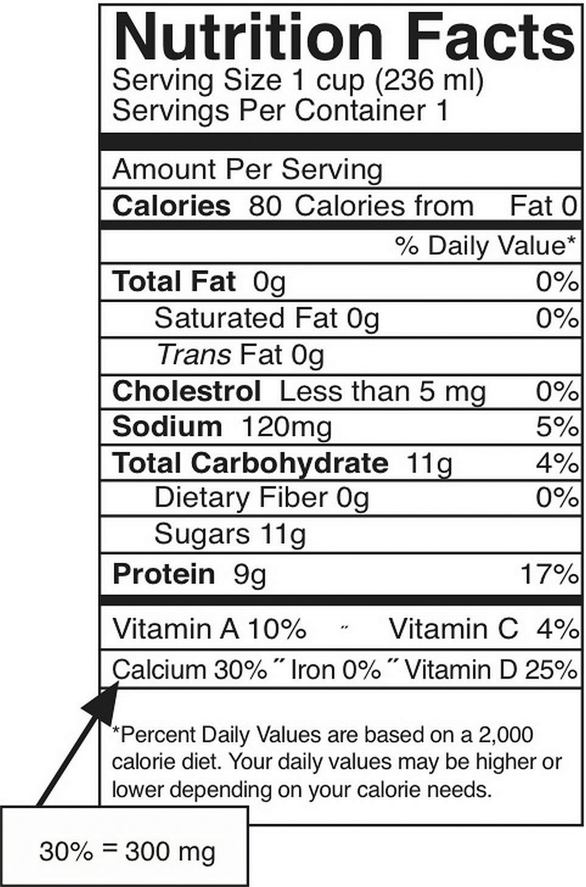

The most abundant mineral in the body is calciumThe most abundant mineral in mineralized bone tissue. Good dietary sources of calcium are dairy products and many vegetables with low oxalate content, such as kale, collard greens, and okra., and greater than 99 percent of it is stored in bone tissue. Although only 1 percent of the calcium in the human body is found in the blood and soft tissues, it is here that it performs the most critical functions. Blood calcium levels are rigorously controlled so that if blood levels drop the body will rapidly respond by stimulating bone resorption, thereby releasing stored calcium into the blood. (This is discussed in further detail shortly.) Thus, bone tissue sacrifices its stored calcium to maintain blood calcium levels. This is why bone health is dependent on the intake of dietary calcium and also why blood levels of calcium do not always correspond to dietary intake.
Calcium plays a role in a number of different functions in the body:
In addition to calcium’s four primary functions calcium has several other minor functions that are also critical for maintaining normal physiology. For example, without calcium, the hormone insulin could not be released from cells in the pancreas and glycogen could not be broken down in muscle cells and used to provide energy for muscle contraction.
Because calcium performs such vital functions in the body, blood calcium level is closely regulated by the hormones parathyroid hormone (PTH)Parathyroid hormone acts to increase calcium levels in the blood., calcitriolThe active hormone produced by vitamin D that also helps to increase and regulate blood calcium levels., and calcitoninThis hormone has the opposite effect of calcitriol and parathyroid hormone and aids in the maintenance of blood calcium levels by decreasing the calcium level as necessary.. Calcitriol is the active hormone produced from vitamin D. Parathyroid hormone and calcitriol act in a concert to increase calcium levels in the blood, while calcitonin does the opposite and decreases blood calcium levels. These hormones maintain calcium levels in the blood in a range between 9 and 11 milligrams per deciliter.
Four parathyroid glands, each the size of a grain of rice, can be found in the neck on the sides of the thyroid gland. PTH increases blood calcium levels via three different mechanisms (Figure 9.4). First, PTH stimulates the release of calcium stored in the bone. Second, PTH acts on kidney cells to increase calcium reabsorption and decrease its excretion in the urine. Third, PTH stimulates enzymes in the kidney that activate vitamin D to calcitriol. Calcitriol acts on intestinal cells and increases dietary calcium absorption. Thus, stored calcium is released, more calcium is absorbed from the diet, and less calcium is excreted, all of which increase calcium levels in the blood.
Calcitriol functions as a second hand to PTH. It not only increases calcium release from bone tissue, but also it increases the absorption of calcium in the small intestine and increases calcium reabsorption by the kidneys. Neither hormone will work unless accompanied by the other. Vitamin D regulates PTH secretion and PTH regulates vitamin D activation to calcitriol. Adequate levels of vitamin D allow for a balance of the calcium between what is released by bone tissue and what is incorporated into bone tissue, so that bone health is not compromised. Calcitriol and PTH function together to maintain calcium homeostasis.
Calcitonin is a hormone secreted by certain cells in the thyroid gland in response to high calcium levels in the blood. In comparison to PTH and calcitriol, calcitonin plays a small role in regulating calcium levels on a day-to-day basis. This is because as calcium levels rise in the blood, calcium feedback inhibits PTH release and effectively shuts off the actions of PTH and calcitriol. This route of feedback inhibition helps prevent calcium’s further accumulation in the blood. At higher nonphysiological concentrations, calcitonin lowers blood calcium levels by increasing calcium excretion in the urine, preventing further absorption of calcium in the gut and by directly inhibiting bone resorption.
Besides forming and maintaining strong bones and teeth, calcium has been shown to have other health benefits for the body, including:
The recommended dietary allowances (RDA) for calcium are listed in Table 9.1 "Dietary Reference Intakes for Calcium". The RDA is elevated to 1,300 milligrams per day during adolescence because this is the life stage with accelerated bone growth. Studies have shown that a higher intake of calcium during puberty increases the total amount of bone tissue that accumulates in a person. For women above age fifty and men older than seventy-one, the RDAs are also a bit higher for several reasons including that as we age, calcium absorption in the gut decreases, vitamin D3 activation is reduced, and maintaining adequate blood levels of calcium is important to prevent an acceleration of bone tissue loss (especially during menopause). Currently, the dietary intake of calcium for females above age nine is, on average, below the RDA for calcium. The Institute of Medicine (IOM) recommends that people do not consume over 2,500 milligrams per day of calcium as it may cause adverse effects in some people.
Table 9.1 Dietary Reference Intakes for Calcium
| Age Group | RDA (mg/day) | UL (mg/day) |
|---|---|---|
| Infants (0–6 months) | 200* | – |
| Infants (6–12 months) | 260* | – |
| Children (1–3 years) | 700 | 2,500 |
| Children (4–8 years) | 1,000 | 2,500 |
| Children (9–13 years) | 1,300 | 2,500 |
| Adolescents (14–18 years) | 1,300 | 2,500 |
| Adults (19–50 years) | 1,000 | 2,500 |
| Adult females (50–71 years) | 1,200 | 2,500 |
| Adults, male & female (> 71 years) | 1,200 | 2,500 |
| * denotes Adequate Intake | ||
Source: Ross, A. C. et al. “The 2011 Report on Dietary Reference Intakes for Calcium and Vitamin D from the Institute of Medicine: What Clinicians Need to Know.” J Clin Endocrinol Metab 96, no. 1 (2011): 53–8. US National Library of Medicine. http://www.ncbi.nlm.nih.gov/pubmed/21118827.
In the typical American diet, calcium is obtained mostly from dairy products, primarily cheese. A slice of cheddar or Swiss cheese contains just over 200 milligrams of calcium. One cup of nonfat milk contains approximately 300 milligrams of calcium, which is about a third of the RDA for calcium for most adults. Foods fortified with calcium such as cereals, soy milk, and orange juice also provide one third or greater of the calcium RDA. Although the typical American diet relies mostly on dairy products for obtaining calcium, there are many other good nondairy sources of calcium (see Note 9.28 "Tools for Change" in Section 9.3 "Micronutrients Essential for Bone Health: Calcium and Vitamin D" and Table 9.2 "Nondairy Dietary Sources of Calcium"). A food’s calcium content can be calculated from the percent daily value (percent DV) displayed on the Nutrition Facts panel (Figure 9.5 "How to Calculate Calcium in Milligrams from the Nutrition Facts Panel"). Since the RDA for calcium used to calculate the daily value (DV) is 1,000 milligrams, you multiply the percent DV by ten to arrive at the calcium content in milligrams for a serving of a particular food. It is important to note that most processed foods offer a poor source for this vital mineral as the refinement process strips away the nutrients in the food.
If you need to increase calcium intake, are a vegan, or have a food allergy to dairy products, it is helpful to know that there are several plant-based foods that are high in calcium. Broccoli, kale, mustard greens, and Brussel sprouts are excellent sources. One cup of these cooked vegetables provides between 100 and 180 milligrams of calcium. To increase the calcium content in your lunch and add some texture to your food, chop up some kale and put it on your sandwich or in your soup. For a list of nondairy sources that are high in calcium, see Table 9.2 "Nondairy Dietary Sources of Calcium". Additionally, you can find the calcium content for thousands of foods by visiting the USDA National Nutrient Database (http://www.nal.usda.gov/fnic/foodcomp/search/). When obtaining your calcium from a vegan diet, it is important to know that some plant-based foods significantly impair the absorption of calcium. These include spinach, Swiss chard, rhubarb, beets, cashews, and peanuts. With careful planning and good selections, you can ensure that you are getting enough calcium in your diet even if you do not drink milk or consume other dairy products.
Figure 9.5 How to Calculate Calcium in Milligrams from the Nutrition Facts Panel
The percent DV of calcium is given on the Nutrition Facts panel. To convert this to milligrams (mg), multiply this number by ten. This is the amount of calcium in milligrams in one serving. This can be done this easily ONLY for calcium and not for other nutrients because the DV for calcium, based on the RDA for adults between the ages of nineteen and fifty, is equal to 1,000 milligrams.
Table 9.2 Nondairy Dietary Sources of Calcium
| Food, Standard Amount | Calcium (mg) | Calories |
|---|---|---|
| Fortified ready-to-eat cereals (various), 1 oz. | 236–1043 | 88–106 |
| Soy beverage, calcium fortified, 1 c. | 368 | 98 |
| Sardines, Atlantic, in oil, drained, 3 oz. | 325 | 177 |
| Tofu, firm, prepared with nigarib, ½ c. | 253 | 88 |
| Pink salmon, canned, with bone, 3 oz. | 181 | 118 |
| Collards, cooked from frozen, ½ c. | 178 | 31 |
| Molasses, blackstrap, 1 Tbsp. | 172 | 47 |
| Soybeans, green, cooked, ½ c. | 130 | 127 |
| Turnip greens, cooked from frozen, ½ c. | 124 | 24 |
| Ocean perch, Atlantic, cooked, 3 oz. | 116 | 103 |
| Oatmeal, plain and flavored, instant, fortified, 1 packet prepared | 99–110 | 97–157 |
| Cowpeas, cooked, ½ c. | 106 | 80 |
| White beans, canned, ½ c. | 96 | 153 |
| Kale, cooked from frozen, ½ c. | 90 | 20 |
| Okra, cooked from frozen, ½ c. | 88 | 26 |
| Soybeans, mature, cooked, ½ c. | 88 | 149 |
| Blue crab, canned, 3 oz. | 86 | 84 |
| Beet greens, cooked from fresh, ½ c. | 82 | 19 |
| Pak-choi, Chinese cabbage, cooked from fresh, ½ c. | 79 | 10 |
| Clams, canned, 3 oz. | 78 | 126 |
| Dandelion greens, cooked from fresh, ½ c. | 74 | 17 |
| Rainbow trout, farmed, cooked, 3 oz. | 73 | 144 |
Source: US Department of Agriculture. Appendix B-4, “Nondairy Food Sources of Calcium.” 2005 Dietary Guidelines for Americans. Updated July 9, 2008. http://www.health.gov/dietaryguidelines/dga2005/document/html/appendixb.htm.
Bioavailability refers to the amount of a particular nutrient in foods that is actually absorbed in the intestine and not eliminated in the urine or feces. Simply put, the bioavailability of calcium is the amount that is on hand to perform its biological functions. In the small intestine, calcium absorption primarily takes place in the duodenum (first section of the small intestine) when intakes are low, but calcium is also absorbed passively in the jejunum and ileum (second and third sections of the small intestine), especially when intakes are higher. The body doesn’t completely absorb all the calcium in food. About 30 percent of calcium is absorbed from milk and other dairy products. Interestingly, the calcium in some vegetables such as kale, Brussel sprouts, and bok choy, is better absorbed by the body than are dairy products. The body absorbs approximately 50 percent of calcium from these plant-based sources.
Stomach acid releases calcium from foods and ionizes it to Ca++. Calcium must be in its ionized form to be absorbed in the small intestine. The greatest positive influence on calcium absorption comes from having an adequate intake of vitamin D. People deficient in vitamin D absorb less than 15 percent of calcium from the foods they eat. The hormone estrogen is another factor that enhances calcium bioavailability. Thus, as a woman ages and goes through menopause, during which estrogen levels fall, the amount of calcium absorbed decreases and the risk for bone disease increases. Some fibers, such as inulin, found in jicama, onions, and garlic, also promote calcium intestinal uptake.
Chemicals that bind to calcium decrease its bioavailability. These negative effectors of calcium absorption include the oxalates in certain plants, the tannins in tea, phytates in nuts, seeds, and grains, and some fibers. Oxalates are found in high concentrations in spinach, parsley, cocoa, and beets. In general, the calcium bioavailability is inversely correlated to the oxalate content in foods. High-fiber, low-fat diets also decrease the amount of calcium absorbed, an effect likely related to how fiber and fat influence the amount of time food stays in the gut. Anything that causes diarrhea, including sicknesses, medications, and certain symptoms related to old age, decreases the transit time of calcium in the gut and therefore decreases calcium absorption. As we get older, stomach acidity sometimes decreases, diarrhea occurs more often, kidney function is impaired, and vitamin D absorption and activation is compromised, all of which contribute to a decrease in calcium bioavailability.
Vitamin DBoth a vitamin and a hormone, vitamin D plays an essential role in maintaining calcium homeostasis. A deficiency in vitamin D compromises bone health. refers to a group of fat-soluble vitamins derived from cholesterol. Vitamins D2 and D3 are the only ones known to have biological actions in the human body. Although vitamin D3 is called a vitamin, the body can actually synthesize vitamin D3. When exposed to sunlight, a cholesterol precursor in the skin is transformed into vitamin D3. However, this is not the bioactive form of vitamin D. It first must be acted upon by enzymes in the liver and then transported to the kidney where vitamin D3 is finally transformed into the active hormone, calcitriol (1,25-dihydroxy vitamin D3) (Figure 9.7 "The Activation of Vitamin D to Calcitriol"). The skin synthesizes vitamin D when exposed to sunlight. In fact, for most people, more than 90 percent of their vitamin D3 comes from the casual exposure to the UVB rays in sunlight. Anything that reduces your exposure to the sun’s UVB rays decreases the amount of vitamin D3 your skin synthesizes. That would include long winters, your home’s altitude, whether you are wearing sunscreen, and the color of your skin (including tanned skin). Do you ever wonder about an increased risk for skin cancer by spending too much time in the sun? Do not fret. Less than thirty minutes of sun exposure to the arms and legs will increase blood levels of vitamin D3 more than orally taking 10,000 IU (250 micrograms) of vitamin D3. However, it important to remember that the skin production of vitamin D3 is a regulated process, so too much sun does cause vitamin D toxicity.
Vitamin D Production in the Body
Visit the University of North Carolina Gillings School of Global Public Health website to review the activation of vitamin D to calcitriol.
A person’s vitamin D status is determined by measuring 25-hydroxy vitamin D3 levels in the blood serum because it reflects both the vitamin D obtained from production in the skin and that from dietary sources. Measuring the active hormone, calcitriol, does not accurately reflect one’s vitamin D status because of its short half-life (six to twelve hours). The vast majority of nutrition experts consider a concentration of 25-hydroxy vitamin D3 in the blood serum less than 20 nanograms per millileter as an indicator of vitamin D deficiency. The IOM states that serum levels above 20 nanograms per milliliter are sufficient to maintain bone health in healthy individuals. Both nutrition experts and health advocates currently are debating what the optimal levels of vitamin D3 should be to take full advantage of all of its health benefits. Some advocates propose that serum levels of vitamin D3 above 40 nonograms per milliliter are optimal. To determine whether higher levels of vitamin D3 provide advantages in fighting diseases such as cancer, a large clinical trial called VITAL (Vitamin D and Omega-3 Trial) has been initiated at Brigham and Women’s Hospital and Harvard Medical School in Boston, Massachusetts. To remain updated on this trial, visit their website at http://www.vitalstudy.org/index.html.
As previously discussed, activated vitamin D3 (calcitriol) regulates blood calcium levels in concert with parathyroid hormone. In the absence of an adequate intake of vitamin D, less than 15 percent of calcium is absorbed from foods or supplements. The effects of calcitriol on calcium homeostasis are critical for bone health. A deficiency of vitamin D in children causes the bone disease nutritional ricketsA childhood bone disease caused by a lack of vitamin D. It is characterized by soft, weak bones that are susceptible to fracture.. Rickets is very common among children in developing countries and is characterized by soft, weak, deformed bones that are exceptionally susceptible to fracture. In adults, vitamin D deficiency causes a similar disease called osteomalaciaSimilar to nutritional rickets, in adults this disease involves softening and weakening of the bones due to a lack of vitamin D or a problem metabolizing the vitamin., which is characterized by low BMD. Osteomalacia has the same symptoms and consequences as osteoporosis and often coexists with osteoporosis. Vitamin D deficiency is common, especially in the elderly population, dark-skinned populations, and in the many people who live in the northern latitudes where sunlight exposure is much decreased during the long winter season.
Observational studies have shown that people with low levels of vitamin D in their blood have lower BMD and an increased incidence of osteoporosis. In contrast, diets with high intakes of salmon, which contains a large amount of vitamin D, are linked with better bone health. A review of twelve clinical trials, published in the May 2005 issue of the Journal of the American Medical Association, concluded that oral vitamin D supplements at doses of 700–800 international units per day, with or without coadministration of calcium supplements, reduced the incidence of hip fracture by 26 percent and other nonvertebral fractures by 23 percent.“Fracture Prevention with Vitamin D Supplementation: A Meta-Analysis of Randomized Controlled Trials.” JAMA 293, no. 18 (2005): 2257–64. http://jama.ama-assn.org/content/293/18/2257.long. A reduction in fracture risk was not observed when people took vitamin D supplements at doses of 400 international units.
The Institute of Medicine RDAs for vitamin D for different age groups is listed in Table 9.3 "Dietary Reference Intakes for Vitamin D". For adults, the RDA is 600 international units, which is equivalent to 15 micrograms of vitamin D. The National Osteoporosis Foundation recommends slightly higher levels and that adults under age fifty get between 400 and 800 international units of vitamin D every day, and adults fifty and older get between 800 and 1,000 international units of vitamin D every day. According to the IOM, the tolerable upper intake level (UL) for vitamin D is 4,000 international units per day. Toxicity from excess vitamin D is rare, but certain diseases such as hyperparathyroidism, lymphoma, and tuberculosis make people more sensitive to the increases in calcium caused by high intakes of vitamin D.
Table 9.3 Dietary Reference Intakes for Vitamin D
| Age Group | RDA (mcg/day) | UL (mcg/day) |
|---|---|---|
| Infant (0–6 months) | 10* | 25 |
| Infants (6–12 months) | 10* | 25 |
| Children (1–3 years) | 15 | 50 |
| Children (4–8 years) | 15 | 50 |
| Children (9–13 years) | 15 | 50 |
| Adolescents (14–18 years) | 15 | 50 |
| Adults (19–71 years) | 15 | 50 |
| Adults (> 71 years) | 20 | 50 |
| * denotes Adequate Intake | ||
Source: Ross, A. C. et al. “The 2011 Report on Dietary Reference Intakes for Calcium and Vitamin D from the Institute of Medicine: What Clinicians Need to Know.” J Clin Endocrinol Metab 96, no. 1 (2011): 53–8. http://www.ncbi.nlm.nih.gov/pubmed/21118827.
There are few food sources of vitamin D. Oily fish, such as salmon, is one of the best. The amount of vitamin D obtained from one 3-ounce piece of salmon is greater than the recommended intake for one day. Many foods, including dairy products, orange juice, and cereals are now fortified with vitamin D. Most vitamin-D-fortified foods contain about 25 percent of the RDA for vitamin D per serving, but check the label. Many people are deficient in vitamin D as a result of the few dietary sources for this vitamin.
Many other health benefits have been linked to higher intakes of vitamin D, from decreased cardiovascular disease to the prevention of infection. Furthermore, evidence from laboratory studies conducted in cells, tissues, and animals suggest vitamin D prevents the growth of certain cancers, blocks inflammatory pathways, reverses atherosclerosis, increases insulin secretion, and blocks viral and bacterial infection and many other things. Vitamin D deficiency has been linked to an increased risk for autoimmune diseases. (Autoimmune diseases are those that result from an abnormal immune response targeted against the body’s own tissues.) An increased prevalence of the autoimmune diseases, rheumatoid arthritis, multiple sclerosis, and Type 1 diabetes has been observed in populations with inadequate vitamin D levels. Additionally, vitamin D deficiency is linked to an increased incidence of hypertension. Until the results come out from the VITAL study (see Note 9.47 "Video 9.2"), the bulk of scientific evidence touting other health benefits of vitamin D is from laboratory and observational studies and requires confirmation in clinical intervention studies.
Watch the video below. List the pros and cons of consuming both raw and pasteurized milk. Develop an informed opinion based upon the history of milk and the scientific evidence about both types of milk consumption.
Raw Milk